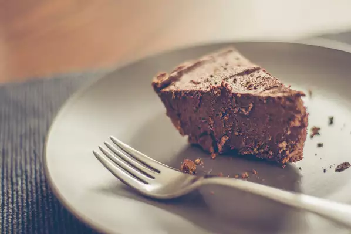

Rich Chocolate Truffle Pie

Description
A no-bake chocolate pie in a chocolate cookie crust, with whipped cream on top.
Ingredients
- 12 oz semisweet chocolate chips
- 1½ cups heavy whipping cream
- ¼ cup sifted confectioner's sugar
- 1 tbsp vanilla extract
- 1 9-inch prepared chocolate cookie crumb crust
Steps
- Combine chocolate chips and ½ of the heavy whipping cream in a bowl, and microwave for 1-2 minutes, stirring every 30 seconds.
- Cool the mixture to room temperature, then stir in sugar and vanilla. Set aside.
- In another small bowl, beat the rest of the heavy cream until soft peaks form.
- In a mixer, beat in the chocolate mixture at high speed, &frac13 at a time, with the cream.
- Mix well and spoon into the crust. Refrigerate for 8 hours minimum before serving.